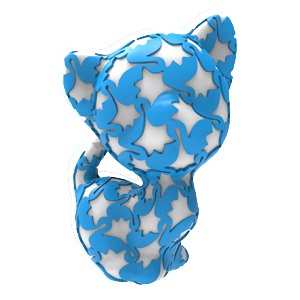
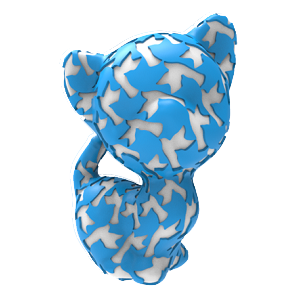
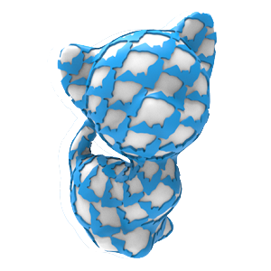

Fabricable Dihedral Escher Tessellations
CAD 2020 (Presented on SPM 2020)
aShandong University bBen-Gurion University of the Negev cHebrew University of Jerusalem

The dual patterns produce interesting light and shadow effects, which imply a great potential for designing customized lampshades.
Abstract
The growing popularity of 3D digital manufacturing has spurred a high demand for accessible methods for designing and fabricating
customized 3D objects. In this paper, we present a novel approach to model and fabricate Escher dual-shape tilings from user-defined
shapes. In a nutshell, Escher’s dual shape tiling method smoothly transforms one tile pattern into another, generating a dual perception
effect of the two shapes. We adapt Escher’s dual shape tiling and perception effect to 3D manufacturing. Thus, our method takes two
user-defined shapes and computes their dual shape tiling. A key feature of our method is that the dual shape patterns utilize solid
and hollow space simultaneously. Specifically, our technique maps one shape to solid structure, while the second shape is mapped to
hollow background, optimizing both spaces and bringing higher utilization of materials. To conform with 3D printability requirements,
our tiling computation accounts for connectivity and strength as well as dense packing for effciency. Our dual shape tiling algorithm
gives rise to novel manufacturing applications such as ornamental texturing with dual perception Escher patterns, decorative window
blinds, flexible tiling patterns, and shade effects.
Dihedral Tessellation
Various dual-shape tiling patterns generated by our system.
Fabricable models
Applying our printable Escher dual-shape tilings onto the 3D kitten.
Downloads
 |
 |
 |  |  | |
| Paper (33.3M) | Dataset (2.18M) | swan_flower.stl (28.4M) | two_birds.stl (28.3M) | swan_bird.stl (28.6M) | bat_fish.stl (24.0M) |
Acknowledgement
We thank all the anonymous reviewers for their valuable suggestions. This work is supported by grants from NSFC (61972232, 61772318) and State Key Laboratory of Virtual Reality Technology and Systems (VRLAB2019A01).
BibTex